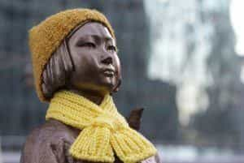

Quintus can be found at qcurtius.com. He is the author of the books On Duties, Thirty Seven, Sallust: The Conspiracy Of Catiline And The War Of Jugurtha, and other books. His work has been reviewed at Taki's Magazine. He can be followed on Twitter


Intellectual bravery can take many forms. Sometimes it manifests itself in the undertaking of a difficult, laborious work of scholarship. At other times it appears in the selection of some controversial topic that challenges conventional wisdom. Conventional wisdom, as we all know, does not appreciate being challenged: its adherents are likely to react blindly, even violently, in their attempts to push the dissenting view back into the shadows.
The field of history—like science, engineering, medicine, and others—has many such sacred cows. Every era develops its own accepted version of the truth. Perhaps things need to be this way; history is such a vast subject, and so rich with examples, that one can prove just about anything through a selective deployment of one handpicked example over another. At some point, a “conventional truth” is established by consensus to impose some intellectual order on the chaos. A cynic might even call this a “mythology.” Once formed, any attempt to deviate from accepted, well-trod lines of inquiry is likely to be greeted with hysterical rage from the guardians of the Sacred Temples of Truth.
But it is good that accepted “truths” are challenged every now and then. Only by doing so can we maintain our sanity and integrity. The law should protect the right to seek the truth, even the right to be mistaken.
This dynamic was on display recently in a notable court case to come out of South Korea. Professor Park Yu-Ha, a female scholar of Japanese history at Sejong University, was acquitted of “criminal defamation” charges that arose from her 2013 book Comfort Women of the Empire. Her work explored the origin, extent, and nature of the Japanese Imperial Army’s “comfort women” program. As many readers will know, the phrase “comfort women” refers to Asian women coerced or recruited (take your pick of verb) for sexual services in the Japanese Army.
The cover of Dr. Park’s book
This was no minor foray into World War Two arcana. This was—and is—an explosive topic in Korea. Questioning it can set oneself up for criminal charges. The issue has been a sore point for many decades in a region where Second World War history is still very much alive. At issue are very real and practical questions: who will have the moral high ground, and what country will be able to exert leverage over the other. In Korea, the “comfort women” have almost come to symbolize the nation’s suffering during the war years. It is against this backdrop that one must see just how shocking Dr. Park’s book was to many in her country. After researching the issue extensively, her conclusions came to this:
After extensive research into historical documents and transcripts of former comfort women’s testimonies, Park said she found evidence that some women worked willingly with the Japanese, and that there were Korean collaborators who worked to recruit the women, which meant that not all of them were mobilised by the Japanese military.
Needless to say, this was not the kind of news that many in Korea were likely to welcome. Japan bashing is a sport in China and Korea of ancient lineage, a sentiment frequently exploited by unscrupulous politicians in the region for one reason or another. Although Japan and Korea signed an agreement in late 2015 finally to put an end to the matter, the “comfort women” issue still lingers in the public mind. There is even a statute of a seated comfort woman sitting across from the Japanese embassy in Seoul. The Japanese government has asked its Korean counterpart to remove the statue, but the latter has put them off, perhaps fearing a negative response from its people.

When Dr. Park’s book appeared, a group of elderly women claiming to be ex-comfort women sued her for damages. Apparently, questioning the official line is a crime in Korea. In 2016, a court found Park guilty of “defaming” the woman and ordered her to pay damages amounting to about $8500. But this was not all. Park herself was subjected to a torrent of harassment and abuse by the Korean media and public. She was accused of being a crank, a traitor, and a pro-Japanese quisling. It is also interesting—and perhaps revealing—that this free-speech story was buried in silence by the Western media, a fact that tells us all we need to know about our own media’s commitment to the principles of academic freedom.
While Park does not deny that comfort women existed or that many suffered grievously along with other civilians in occupied areas, she has questioned the extent of the program and how women came to be part of it. Is Dr. Park right? I do not know. I have not read her book; as far as I know no English translation is available. I doubt any translation will be available. What I do know is that her struggle to publish her findings is a very important event.
If academic freedom is to have any meaning at all, it must be embraced for even the most controversial topics. It is a credit to the Korean legal system that it did the right thing and acquitted Park of the spurious charges against her. South Korea has much to teach the United States on the subject of academic freedom. Somehow, I doubt we would see the same kind of fair outcome if some equivalent drama happened here in the United States.
Read More: Four Colossal Lies Men Have Been Told Since Birth